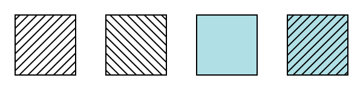
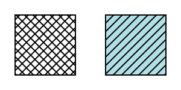
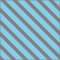

The operation of painting the interior of a
shape or the interior of the
character glyphs in a text string.
paint
A paint represents a way of putting color values onto the
canvas. A paint might consist of both color values and
associated alpha values which control the blending of colors
against already existing color values on the canvas. SVG
supports three types of built-in paint:
color,
gradients and
patterns.
paint server element
An element that defines a paint server.
Specifically: .
stroke
The operation of painting the outline
of a shape or the outline of
character glyphs in a text string.
Graphical elements that define a shape – 'path' elements, basic shapes,
and text content elements – are rendered by being filled,
which is painting the interior of the object, and stroked, which is
painting along the outline of the object. Filling and stroking are both
painting operations. SVG 2 supports a number of
different paints that the fill and stroke of a graphical element can be painted with:
a single color,
a gradient (linear, radial, or mesh),
a pattern (vector or raster, possibly tiled),
a hatch,
other images as specified using CSS Image Value syntax [CSS3IMAGES].
The paint to use for filling and stroking an element is specified using the
'fill' and 'stroke' properties. The following section describes
the different values that can be used for these properties.
Some graphics elements – 'path' elements and basic
shapes – can also have marker symbols
drawn at their vertices or at other positions along the path that
they describe. The Markers section below describes
how markers can be defined and used.
SVG 2 adds markers on shapes. Resolved at
Tokyo F2F.
Specifying paint
SVG 2 Requirement:
Add new paint values for referencing current fill paint, stroke paint, etc.
Properties 'fill' and 'stroke' take on a comma separated list of values of type <paint>. Each paint is applied to an element in reverse order. Note, only a paint server in the last position may take an optional fallback color.
The ability to apply more than one paint to an element is new in SVG 2.
The paint order follows that of CSS backgrounds.
]]>

The rightmost rectangle is filled by stacking the paints shown in the other rectangles.
A solid color as defined in CSS Color Module Level 3.
[CSS3COLOR] All forms of <color>
defined by that specification are valid for use as a <paint>
value. This includes the basic color keywords,
RGB & RGBA color values, the transparent
value, HSL & HSLA color values, the extended color keywords,
the currentColor value,
and the CSS2 UI colors. Note that when currentColor
is used, it refers to the current animated value of the 'color' property.
A reference to a paint server element with, if
the paint server is the last paint specified, an
optional fallback color or none.
The <url> or child keyword
is used to identify a 'solidcolor'
element, gradient element, 'pattern' element, or 'hatch' element,
which defines the paint to use.
The child keyword in this instance matches the
last child paint server element of the element where the paint value
is specified.
If the reference is not valid (e.g., it points to an element that
does not exist, no element was matched, or the element is not a valid paint
server), then the fallback value is used (if the paint server reference is the last
paint specified and if the fallback color is provided); otherwise,
it must be treated as if none was specified.
Changed from SVG 1.1 behavior where document is in error
if paint server missing or invalid.
]]>

The left rectangle shows the expected fill if both MyHatch1 and MyHatch2 are defined. The right rectangle shows the expected fill if MyHatch1 is defined but MyHatch2 is missing.
How should 'child' behave with allowing multiple paints?
Include an example.

The paint server used to fill the 'rect'
element is a child element of the shape being filled.
Note that there are two child paint servers and the last paint server
is the one matched to the child keyword.
context-fill
context-stroke
The same paint as the computed value of the 'fill' or 'stroke'
property, respectively, of the context element. If there
is no context element, then no paint is applied. If the referenced paint
is a gradient or a pattern, then the coordinate space to use and the
object used for any 'objectBoundingBox'-relative
values are the same as those of the context element.
context element
The context element of an element is defined as follows:
If the element is within a 'marker element', and
is being rendered as part of that marker due to being referenced
via a marker property, then the context element
is the element referencing that 'marker element'.
If the element is within a sub-tree that is instantiated
with a 'use' element, then the context element is
that 'use' element.
Otherwise, there is no context element.
The effect of the 'color' property
See the CSS Color Module Level 3 specification for the
definition of 'color'.
[CSS3COLOR]
The following example shows how the inherited value of the
'color' property from an HTML document can be used to
set the color of SVG text in an inline SVG fragment.
Please see the diagram below:
]]>
Please see the diagram below:
The text and arrow in the SVG fragment are filled
with the same color as the inherited 'color' property.
The 'fill' property paints the interior of the given graphical
element. The area to be painted consists of any areas inside the outline
of the shape. To determine the inside of the shape, all subpaths are
considered, and the interior is determined according to the rules
associated with the current value of the 'fill-rule' property.
The zero-width geometric outline of a shape is included in the area to
be painted.
The fill operation fills open subpaths by performing the fill
operation as if an additional "closepath" command were added to the
path to connect the last point of the subpath with the first point of
the subpath. Thus, fill operations apply to both open subpaths within
'path' elements (i.e., subpaths without a closepath command) and
'polyline' elements.
The 'fill-rule' property indicates the algorithm (or
winding rule) which is to
be used to determine what parts of the canvas are included inside the
shape. For a simple, non-intersecting path, it is intuitively clear
what region lies "inside"; however, for a more complex path, such as a
path that intersects itself or where one subpath encloses another, the
interpretation of "inside" is not so obvious.
The 'fill-rule' property provides two options for how the
inside of a shape is determined:
nonzero
This rule determines the "insideness" of a point on the
canvas by drawing a ray from that point to infinity in any
direction and then examining the places where a segment of
the shape crosses the ray. Starting with a count of zero,
add one each time a path segment crosses the ray from left
to right and subtract one each time a path segment crosses
the ray from right to left. After counting the crossings,
if the result is zero then the point is outside
the path. Otherwise, it is inside. The following
drawing illustrates the nonzero
rule:
The effect of a nonzero fill rule on paths with self-intersections
and enclosed subpaths.
evenodd
This rule determines the "insideness" of a point on the
canvas by drawing a ray from that point to infinity in any
direction and counting the number of path segments from the
given shape that the ray crosses. If this number is odd,
the point is inside; if even, the point is outside. The
following drawing illustrates the evenodd
rule:
The effect of an evenodd fill rule on paths with self-intersections
and enclosed subpaths.
The above descriptions do not specify what to do if a path
segment coincides with or is tangent to the ray. Since any ray will do,
one may simply choose a different ray that does not have such problem
intersections.
'fill-opacity' specifies the
opacity of the painting operation used to paint the interior
the current object. (See Painting shapes and
text.) A value of 0 means fully transparent, and a
value of 1 means fully opaque.
See also the 'opacity' property, which
specifies group opacity.
To support strokes whose width does not change when zooming a page, as common for example in maps.
Owner:
Chris or Erik (no action)
Note:
Note that this could be part of more generic non-scaling features.
In this section, we define a number of properties that allow the
author to control different aspects of a stroke, including its paint,
thickness, use of dashing, and joining and capping of
path segments.
In all cases, all stroking properties which are affected by
directionality, such as those having to do with dash patterns, must be
rendered such that the stroke operation starts at the same point at
which the graphics element starts. In particular, for 'path'
elements, the start of the path is the first point of the initial
"moveto" command.
For stroking properties such as dash patterns whose computations
are dependent on progress along the outline of the graphics element,
distance calculations are required to utilize the SVG user agent's
standard Distance along a path
algorithms.
When stroking is performed using a complex paint server, such as a
gradient or a pattern, the stroke operation must be identical to the
result that would have occurred if the geometric shape defined by the
geometry of the current graphics element and its associated stroking
properties were converted to an equivalent 'path' element and
then filled using the given paint server.
The 'stroke' property paints along the outline of the given
graphical element.
Note that when stroking a 'path' element,
any subpath consisting of a moveto
but no following line drawing command will not be stroked.
Any other type of zero-length subpath, such as
'M 10,10 L 10,10'
or 'M 30,30 Z'
will also not be stroked if the 'stroke-linecap' property has a value of
butt. See the definition of
the stroke shape below for the details of computing
the stroke of a path.
The 'stroke-opacity' property specifies the opacity of the
painting operation used to stroke the current object. (See
Painting shapes and text.)
As with 'fill-opacity', a value of 0 means fully transparent, and a value of 1
means fully opaque.
See also the 'opacity' property, which specifies
group opacity.
'stroke-linecap' specifies the shape to be used at the end of
open subpaths when they are stroked. The possible values are:
butt
This value indicates that the stroke for each subpath does not
extend beyond its two endpoints. A zero length subpath will therefore
not have any stroke.
round
This value indicates that at each end of each subpath, the shape
representing the stroke will be extended by a half circle with a radius equal
to the stroke width. If a subpath has zero length, then the resulting
effect is that the stroke for that subpath consists solely of a full circle
centered at the subpath's point.
square
This value indicates that at the end of each subpath, the shape
representing the stroke will be extended by a rectangle with the
same width as the stroke width and whose length is half of the stroke width.
If a subpath has zero length, then the resulting effect is that the
stroke for that subpath consists solely of a square with side length
equal to the stroke width, centered at the subpath's point, and oriented
such that two of its sides are parallel to the effective tangent
at that subpath's point. See
'path'
element implementation notes for details on how to determine the tangent
at a zero-length subpath.
The three types of line caps.
See the definition of the cap shape below for a more precise
description of the shape a line cap will have.
Controlling line joins: the 'stroke-linejoin'
and 'stroke-miterlimit' properties
This value indicates that a sharp corner is to be used to join path segments.
The corner is formed by extending the outer edges of the stroke at the tangents
of the path segments until they intersect. If the 'stroke-miterlimit'
is exceeded, the line join falls back to bevel
(see below).
miter-clip
This value is the same as miter but if
the 'stroke-miterlimit' is exceeded, the miter is clipped at a
miter length equal to the 'stroke-miterlimit' value multiplied
by the stroke width (see below).
round
This value indicates that a round corner is to be used to join path segments.
The corner is a circular sector centered on the join point.
bevel
This value indicates that a bevelled corner is to be used to join path segments.
The bevel shape is a triangle that fills the area between the two stroked segments.
arcs
This value indicates that an arcs corner is to be used to join
path segments. The arcs shape is formed by extending the outer
edges of the stroke at the join point with arcs that have the same
curvature as the outer edges at the join point.
The miter-clip and
arcs values are new in SVG 2.
The miter-clip value offers a more
consistent presentation for a path with multiple joins as well as
better behavior when a path is animated.
The arcs value provides a better
looking join when the path segments at the join are curved.
When two line segments meet at a sharp angle and a value of
miter,
miter-clip, or
arcs has been specified for
'stroke-linejoin', it is possible for the join to extend
far beyond the thickness of the line stroking the path. The
'stroke-miterlimit' imposes a limit on the extent of the
line join.
<number>
The limit on the extent of a
miter,
miter-clip, or
arcs line join as a multiple of
the 'stroke-width' value. The value of
'stroke-miterlimit' must be a <number> greater
than or equal to 1. Any other value is an error (see
Error processing).
For the miter or the
miter-clip values, given
the angle θ between the segments in local coordinate system,
the miter length is calculated by:
miter length = stroke-width / sin(theta / 2)
If the miter length divided by the stroke width exceeds the
'stroke-miterlimit' then for the value:
miter
the join is converted to a bevel;
miter-clip
the miter is clipped by a line perpendicular to the line bisecting
the angle between the two path segments at a distance of the value
of miter length from the intersection of the two path segments.
Effect on line join when 'stroke-miterlimit' is
exceeded. The olive-green dashed lines shows the position of the
miter limit when the 'stroke-miterlimit' value is 1.5. The
gray regions shows what the joins would look like without a miter
limit.
For the arcs value, the
miter length is calculated along a circular arc that is
tangent to the line bisecting the angle between the two segments at
the point the two segments intersect and passes through the end
point of the join. The line join is clipped, if necessary, by a line
perpendicular to this arc at a miter length equal to the
value of the 'stroke-miterlimit' value multiplied by the
stroke width.
The 'stroke-dasharray' property controls
the pattern of dashes and gaps used to form the shape of
a path's stroke.
none
Indicates that no dashing is used.
<dasharray>
Specifies a dashing pattern to use. A <dasharray> is
a list of comma and/or white space separated lengths or percentages.
Each value specifies a length along the path for which the stroke
is to be painted (a dash) and not painted (a gap).
The first value and every second value in the list after it specifies
the length of a dash, and every other value specifies the length of a gap
between the dashes. If the list has an odd number of values, then it is
repeated to yield an even number of values. (Thus, the rendering behavior
of stroke-dasharray: 5,3,2
is equivalent to stroke-dasharray: 5,3,2,5,3,2.)
The resulting even-length dashing pattern is repeated along each subpath.
The dashing pattern is reset and begins again at the start of each subpath.
If any value in the list is negative, the <dasharray> value is
invalid. If all of the values in the list are zero,
then the stroke is rendered as a solid line without any dashing.
A dashed stroke. The dashing pattern is 20,10.
The red line shows the actual path that is stroked.
The 'stroke-dashoffset' property specifies the distance into the repeated
dash pattern to start the stroke dashing at the beginning of the path. If the
value is negative, then the effect is the same as dash offset d:
d = s - (abs(stroke-dashoffset) mod s)
where s is the sum of the dash array values.
A dashed stroke with a non-zero dash offset. The dashing
pattern is 20,10 and the dash offset is
15. The red line shows the actual path that
is stroked.
See the definition of dash positions below for a more precise
description of positions along a path that dashes will be placed.
To define dash starting point on basic shapes and path segments.
Owner:
Cameron (no action)
Something in this section needs to reference
'path/pathLength' so that dash lengths are in the author's
path length space.
The stroke shape of an element is the
shape that is filled by the 'stroke' property. Since 'text'
elements can be rendered in multiple chunks, each chunk has its own
stroke shape. The following algorithm describes what the stroke shape
of a 'path', basic shape or individual 'text' chunk is,
taking into account the stroking properties above:
Let shape be an empty shape.
Let path be the equivalent path of the element (or the individual
chunk of a 'text' element).
Let dash be the shape that includes, for all distances
between start and end along the subpath, all
points that lie on the line perpendicular to the subpath at that
distance and which are within distance 'stroke-width' of
the point on the subpath at that position.
Set dash to be the union of dash and the
starting cap shape for the subpath at position start.
Set dash to be the union of dash and the
ending cap shape for the subpath at position end.
Let index and last be the indexes of the
path segments in the subpath at distance start and
end along the subpath.
It does not matter whether any zero length segments are
included when choosing index and last.
While index < last:
Set dash to be the union of dash and the
line join shape for the subpath at segment index index.
Set index to index + 1.
Set shape to be the union of shape and
stroke.
Return shape.
The dash positions for a given subpath of
the equivalent path of a 'path' or basic shape is a
sequence of pairs of values, which represent the starting and ending distance
along the subpath for each of the dashes that form the subpath's stroke. It is
determined as follows:
Let pathlength be the length of the subpath.
Let dashes be the list of values of 'stroke-dasharray'
on the element, converted to user units, repeated if necessary so that it has
an even number of elements; if the property has the value
none, then the list has a single value 0.
Let count be the number of values in dashes.
Let sum be the sum of the values in dashes.
If sum = 0, then return a sequence with the single pair
<0, pathlength>.
If this is a starting cap, then return a semicircle of radius 'stroke-width' positioned such that:
Its straight edge is parallel to the line perpendicular to the subpath at distance position along it.
The midpoint of its straight edge is at the point that is along the subpath at distance position.
The direction from the midpoint of its arc to the midpoint of its straight edge is the same as the direction of the subpath at distance position along it.
Otherwise, this is an ending cap. Return a semicircle of radius 'stroke-width' positioned such that:
Its straight edge is parallel to the line perpendicular to the subpath at distance position along it.
The midpoint of its straight edge is at the point that is along the subpath at distance position.
The direction from the midpoint of its straight edge to the midpoint of its arc is the same as the direction of the subpath at distance position along it.
If this is a starting cap, then return a rectangle with side lengths 'stroke-width' and 'stroke-width' / 2 positioned such that:
Its longer edges, A and B, are parallel to the line perpendicular to the subpath at distance position along it.
The midpoint of A is at start.
The direction from the midpoint of B to the midpoint of A is the same as the direction of the subpath at distance position along it.
Otherwise, this is an ending cap. Return a rectangle with side lengths 'stroke-width' and 'stroke-width' / 2 positioned such that:
Its longer edges, A and B, are parallel to the line perpendicular to the subpath at distance position along it.
The midpoint of A is at end.
The direction from the midpoint of A to the midpoint of B is the same as the direction of the subpath at distance position along it.
The three different 'stroke-linecap' values used on
paths with a single, non-zero length subpath. The white line is the path
itself and the thick gray area is the stroke. On the top row, the green lines
indicate the perpendicular to the tangent at the path endpoints and the pink
areas are the caps. The bottom row shows the stroke without the perpendicular
and cap highlighting.
The line join shape for a given segment of
a subpath is determined as follows:
Let P be the point at the end of the segment.
Let A be the line parallel to the tangent at the end of the segment.
Let B be the line parallel to the tangent at the start of the following segment.
If A and B are the same line, then return an empty shape.
Let Aleft and Aright be lines
parallel to A at a distance of 'stroke-width' / 2 to the
left and to the right of A relative to the subpath direction, respectively.
Let Bleft and Bright be lines
parallel to B at a distance of 'stroke-width' / 2 to the
left and to the right of B, relative to the subpath direction, respectively.
Let P1, P2 and
P3 be points determined as follows:
If the smaller angle between A and B is on the
right of these lines, considering the direction of the subpath, then
P1 and P2 are the points on
Aleft and Bleft closest to
P, and P3 is the intersection of
Aleft and Bleft.
Otherwise, P1 and P2 are
the points on Aright and Bright
closest to P, and P3 is the intersection
of Aright and Bright.
Let bevel be the triangle formed from the three points
P, P1 and P2.
If 'stroke-linejoin' is round, then
return the union of bevel and a circular sector of radius
'stroke-width', centered on P, and which has
P1 and P2 as the two endpoints of
the arc.
If 'stroke-linejoin' is arcs,
then find the circles that are tangent to the stroke edges at
P1 and P2 with the
same curvature as the edges at those points (see below). If both
curvatures are zero fall through to miter-clip.
Extend the stroke edges using these circles (or a line, in the case
of zero curvature). If the two circles (or circle and line) do not
intersect, fall through to miter-clip.
If the two circles (or circle and line) intersect, the line join
region is defined by the lines that connect P
with P1 and P2 and the
arcs defined by the circles (or arc and line) between the closest
intersection point to P, and P1
and P2.
Next calculate the miter limit as defined in
the 'stroke-miterlimit' section. Clip any part of the line
join region that extends past the miter limit. Return the
resulting region.
Note that the curvatures are calculated in user-space before any
transforms are applied.
If 'stroke-linejoin' is miter or
miter-clip then the line join
region is the union of bevel and the triangle formed
from the three points P1,
P2 and P3.
Let θ be the angle between A and B.
If 1 / sin(θ / 2) ≤ 'stroke-miterlimit', then return
the line join region.
If 'stroke-linejoin' is miter-clip,
then clip any part of the line join region that extends past the
miter limit and return this region.
Return bevel.
Construction of a round line join shape, shown in pink.
The white line is the original path, which has two segments that come to a
point, and the gray region is the stroke.
Construction of an arcs line join shape, shown in
pink. The white line is the original path, which has two segments
that come to a point, and the gray region is the stroke. The
dashed lines show circles that are tangent to and have the
curvature of the segments at the join. The olive-green circles
(concentric with the dashed circles) define the join shape.
Computing the circles for the arcs
'stroke-linejoin'
The arcs'stroke-linejoin'
requires finding circles that are both tangent to and have the same
curvatures as the outer stroke edges at the ends of path
segments. To find one of these circles, first calculate the
curvature κ of the path segment at its end (see
below). Next, find the radius of a circle corresponding to this
curvature: r = 1/κ. Increase or
decrease the radius by one half of the stroke width to account for
the stroke: rc = r ± ½
stroke-width. The center of the circle will be on a line normal to
the path end a distance of rc away from the
outer stroke edge at the end.
For a line: the curvature is infinite. Extend the outer stroke edge by a line.
For an elliptical arc:
$$\kappa(t) = {{r_x r_y}\over{(r_x^2 \sin^2 t + r_y^2 \cos^2 t)^{3/2}}}$$
where:
$$t = \arctan ( {r_y \over r_x} \tan \theta )$$
The parameter θ at the beginning or end of an
arc segment can be found by using the formulas in
the Elliptical arc
implementation notes. (Note, some renderers convert elliptical
arcs to cubic Béziers prior to rendering so the equations here may
not be needed.)
Where κ(0) and κ(1) are the
signed curvatures at the start and end of the path segment
respectively, and the P's are the three points that
define the quadratic Bézier.
Where κ(0) and κ(1) are the
signed curvatures at the start and end of the path segment
respectively, and the P's are the four points that define
the cubic Bézier. Note, if
P0 and P1, or
P2 and P3 are degenerate, the
curvature will be infinite and a line should be used in constructing the join.
Controlling visibility: the effect of the 'display' and 'visibility'
properties
The 'display' property affects the direct processing
of a given element, but it does not prevent it from
being referenced by other elements. For example, setting
display: none on a 'path' element
will prevent that element from getting rendered directly onto the
canvas, but the 'path' element can still be referenced by a
'textPath' element; furthermore, its geometry will be used
in text-on-a-path processing even if the 'path' has
display: none.
When applied to a graphics element or text content element,
setting 'visibility' to hidden
or collapse
results in the element not being painted. It is, however,
still part of the rendering tree, is sensitive
to pointer events (depending on the value of 'pointer-events'),
contributes to bounding box calculations and clipping paths,
and does affect text layout.
Sometimes it is of interest to let the outline of an object keep its
original width or to let the position of an object fix no matter which
transforms are applied to it. For example, in a map with a 2px wide line
representing roads it is of interest to keep the roads 2px wide even when the
user zooms into the map, or introductory notes on the graphic chart in which
panning is possible.
To offer such effects regarding special coordinate transformations and
graphic drawings, SVG Tiny 1.2 introduces the 'vector-effect' property.
Although SVG Tiny 1.2 introduced only non-scaling stroke behavior, this version
introduces a number of additional effects. Furthermore, since these effects
can be specified in combination, they show more various effects. And, future
versions of the SVG language will allow for more powerful vector effects
through this property.
Specifies that no vector effect shall be applied, i.e. the default rendering behaviour
from SVG 1.1 is used which is to first fill the geometry of a shape with a specified
paint, then stroke the outline with a specified paint.
non-scaling-stroke
Modifies the way an object is stroked. Normally stroking involves calculating stroke
outline of the shape's path in current local coordinate system and filling that outline with the
stroke paint (color or gradient). With the non-scaling-stroke vector effect, stroke outline
shall be calculated in the "host" coordinate space instead of local coordinate system.
More precisely: a user agent establishes a host coordinate space which in SVG Tiny 1.2 is
always the same as "screen coordinate space". The stroke outline is calculated in the
following manner: first, the shape's path is transformed into the host coordinate space.
Stroke outline is calculated in the host coordinate space. The resulting outline is
transformed back to the local coordinate system.
(Stroke outline is always filled with stroke paint in the current local coordinate system). The resulting visual effect of this
modification is that stroke width is not dependant on the transformations of the element
(including non-uniform scaling and shear transformations) and zoom level.
non-scaling-size
Specifies special local coordinate system toward this element
and its descendant by constrained transformations with the following
characteristics. The scale of the local coordinate system do not
change in spite of change of CTMs from a host coordinate space.
However, it does not specify the suppression of rotation and skew. Also,
it does not specify the fixation of placement of local coordinate system.
Since non-scaling-size suppresses scaling of local coordinate system,
it also has the characteristic of non-scaling-stroke. The transformation
formula and the example behavior are indicated to the following chapter.
non-rotation
Specifies special local coordinate system toward this element
and its descendant by constrained transformations with the following
characteristics. The rotation and skew of the local coordinate system
is suppressd in spite of change of CTMs from a host coordinate space.
However, it does not specify the suppression of scaling. Also, it does not
specify the fixation of placement of local coordinate system.
The transformation formula and the example behavior are indicated to the
following chapter.
fixed-position
Specifies special local coordinate system toward this element
and its descendant by constrained transformations with the following
characteristics. The placement of local coordinate system is fixed
in spite of change of CTMs from a host coordinate space. However,
it does not specify the suppression of rotation, skew and scaling. When
the element that has fixed-position effect and also has 'transform'
property, that property is consumed for this effect. The shift components
e and f of matrix of 'transform' property are
used to transfer the origin of fixed local coordinate system. The
transformation formula and the example behavior are indicated to the
following chapter.
These values can be enumerated. Thereby, the effect which has these
characteristics simultaneously can be specified.
The following two values assists the above-mentioned values. They show the
host coordinate space of constrained transformations. Especially it has
effective for the element belonging to nested viewport coordinate system such
as nested contents or nested 'svg' elements. An initial value in case
it is not specified is viewport.
It specifies the coordinate system of content which under the immediate
control of user agent. So to speak, it is "scrren" which user agent
has. ("screen coordinate space" in SVGT1.2) Even if that element belongs to
nested viewport coordinate system, that vector effect is always effective for
change of CTM of the any hierarchy. If the SVG implementation is part
of a user agent which supports CSS compatible px units, it is a
coordinate system on CSS pixel of rootmost content. Generally, the pixel (or
dot) of a device and pixel of CSS are not always equal by influences of the
zoom function which user agent itself has, and variation of dpi. (see
resolution
[CSS Values and Units Module Level 3])
Accordingly, this value does not specify constrained transformations toward
the such a device coordinate system.
Note: Future versions of SVG may allow ways to specify the device coordinate system.
Computing the vector effects
This section shows the list of transformation formulas regarding
combinations of the values for clarification of the behavior of vector effects
excluding non-scaling-stroke which has clear
implications.
The code assumes a 2D rendering context.
Width CSS Transforms we get a 3D rendering context as well? How does that work
on perspective or 3D transformations?
CSS Transforms Level 1 mentions
about 3D rendering context and non scaling stroke with the purport that the
functionality becomes no affect. Is it appropriate to extend it to all the
vector effects?
When the 'vector-effect' is added to an element like the above, the
transformation formula for user coordinate to the device coordinate changes as
follows. Here, xf and yf are user
coordinate of the corresponding element and its descendant. And,
xo and yo are matrix element
e and f of the transform attribute which the
corresponding element has. In addition, |det(CTM)| is absolute value of
the determinants of CTM. When this value becomes 0 and
non-scaling-size is appointed,
'vector-effect' becomes invalidity namely none.
veValue
Formula
non-scaling-size
non-rotation
non-scaling-sizenon-rotation
fixed-position
fixed-positionnon-scaling-size
fixed-positionnon-rotation
fixed-positionnon-scaling-sizenon-rotation
Computing the vector effects for nested viewport coordinate systems
Below is normal coordinate transformation formula for nested viewport
coordinate systems without vector effects. xviewport(UA) and
yviewport(UA) are coordinates which under the immediate
control of user agent. CTMthis is CTM for the
transformation matrix from local coordinate system of an target graphic
to viewport coordinate system to which it belongs.
CTMparent is CTM for the transformation matrix from
aforementioned viewport coordinate system to viewport coordinate system
of the parent of that. And, CTMroot is CTM for
rootmost viewport coordinate system (UA).
When applying seven formulas of the preceding section to nested viewport
coordinate systems, the application way of those formulas changes as follows
by whether viewport or
screen is specified as the additional value of
'vector-effect'.
When viewport value is specified,
user agent computes coordinates combining either of seven formulas of
the preceding chapter, and the following formulas.
When screen value is specified,
user agent computes coordinates combining either of seven formulas of
the preceding chapter, and the following formulas.
Examples of vector effects
Below is an example of the non-scaling-stroke'vector-effect'.
Below is an example of the none'vector-effect' (no vector effect).
Before changing CTM
After changing CTM
Source code
]]>
Below is an example of the non-scaling-size.
Before changing CTM
After changing CTM
]]>
Below is an example of the non-rotation.
Before changing CTM
After changing CTM
]]>
Below is an example of the non-scaling-sizenon-rotation.
Before changing CTM
After changing CTM
]]>
Below is an example of the fixed-position.
Before changing CTM
After changing CTM
]]>
Below is an example of the non-scaling-sizefixed-position.
Before changing CTM
After changing CTM
]]>
Below is an example of the non-rotationfixed-position.
Before changing CTM
After changing CTM
]]>
Below is an example of the non-scaling-sizenon-rotationfixed-position.
A markable element is one that can have markers
painted on it either through the use of the marker properties
or by having a 'marker element' element as a child.
The following elements are markable elements:
The 'marker-start' and 'marker-end' properties
can be used to place markers at the first and last vertex, and the
'marker-mid' property can be used to place markers at every
other vertex (aside from the first and last). The 'marker-start' and
'marker-end' can be used for example to add arrowheads to paths.
Markers placed using these properties are known as
vertex markers.
In SVG 2, vertex markers are the only kind of markers
available. Other specifications will add new types of markers.
'markerWidth', 'markerHeight' and the contents
of the 'marker element' represent values in a coordinate system
which has a single unit equal the size in user units of the
current stroke width (see the 'stroke-width' property) in
place for the graphic object referencing the marker.
The 'markerWidth' and 'markerHeight' attributes
represent the size of the viewport into which the marker is to
be fitted according to the 'viewBox' and 'preserveAspectRatio'
attributes. A value of zero for either
attribute results in nothing being rendered for the marker. A negative value
for either attribute is an error (see
Error processing).
New in SVG 2: geometric keywords (matches use in 'symbol').
We will add top/center/bottom, left/center/right keywords to
refX/refY on marker/symbol. Resolved at
London
F2F. Values inspired by
'background-position'.
The 'refX' and 'refY' attributes define the reference
point of the marker which is to be placed exactly at the marker's
position on the markable element. They are interpreted as being in the
coordinate system of the marker contents, after application of the
'viewBox' and 'preserveAspectRatio' attributes.
The 'orient' attribute indicates how the marker
is rotated when it is placed at its position on the markable element.
Values have the following meaning:
'auto'
A value of 'auto'
indicates that the marker is oriented such that its positive
x-axis is pointing in the direction of the path at the point
it is placed.
This needs to reference a definition for how
directionality of a given start/mid/end vertex is calculated.
Part of that (which should be moved somewhere more appropriate) is in
the path element implementation notes.
Some wording from SVG 1.1 appears to have been lost, compare with this.
Here's an example that is a bit unclear currently:
<svg>
<marker id="m" orient="auto" overflow="visible">
<rect x="-1" y="-0.5" width="1" height="1" fill="green"/>
</marker>
<path d="M50,0C50,50 50,100 50,100" marker-end="url(#m)" stroke-width="100" stroke="red"/>
</svg>
The second control point and the endpoint coincide, should this mean that the direction of the endpoint is a) unknown [aka default to 0 degrees] or
b) that you have to look at the previous segment(s)/command(s) until a direction can be established?
If the marker is on the first or last vertex of a closed subpath, then the
incoming direction taken from the final path segment and the outgoing
direction is taken from:
the first path segment of the following subpath,
if the following subpath does not begin with a
'moveto' command, and
the first path segment of the current subpath,
if the following subpath does begin with a
'moveto' command
or if there is no following subpath.
'auto-start-reverse'
A value of 'auto-start-reverse'
means the same as 'auto' except that
for a marker placed by 'marker-start', the orientation is 180°
different from the orientation as determined by 'auto'.
This allows a single arrowhead marker to be defined
that can be used for both the start and end of a path, point in the right
directions.
An <angle> value represents the angle the marker's
positive x-axis makes with the positive x-axis in the local coordinate system
of the markable element, and a <number> value
with no unit represents an angle in degrees. For example, if a value of
'0' is given, then the marker will be drawn
such that its x-axis will align with the x-axis of the user
space of the graphic object referencing the marker.
A value of '90deg' will result in the
marker being drawn with its positive x-axis in the direction
of the positive y-axis of the markable element's local coordinate system.
The orientation occurs after the marker has been fitted into its
viewport. See the Details on how markers are rendered
section below for an illustrative example.
The contents of the 'marker element' are relative to a new
coordinate system. The 'markerUnits' attribute determines an initial
scale factor for transforming the graphics in the marker into the user
coordinate system for the referencing element. An additional set of
transformations might occur if there is a 'viewBox' attribute, in
which case the coordinate system for the contents of the 'marker element'
will be transformed due to the processing of attributes 'viewBox'
and 'preserveAspectRatio'. If there is no 'viewBox'
attribute, then the assumed default value for the the 'viewBox'
attribute has the origin of the viewBox coincident with the origin
of the viewport and the width/height of the viewBox the same as the
width/height of the viewport.
The user agent style sheet sets
the 'overflow' property for 'marker element' elements to
hidden, which causes a rectangular clipping
path to be created at the bounds of marker's viewport. Unless the
'overflow' property is overridden, any graphics within the marker which
goes outside of the marker's viewport will be clipped.
Properties inherit into the
'marker element' element from its ancestors; properties do not
inherit from the element referencing the 'marker element' element.
Note however that by using the context-stroke
value for the 'fill' or 'stroke' on elements in its definition,
a single marker can be designed to match the style of the element referencing
the marker.
Indicates that the 'marker element' element referenced
by the <url> value will be used.
If the URL reference is not valid
(e.g., it points to an object that is undefined or the object is not
a 'marker element' element), then the marker reference is also not
valid.
child
Indicates that the last child 'marker element' element of the
element where the property is specified will be used.
If there is no such element, then the reference is not valid.
Vertex markers: the 'marker-start',
'marker-mid' and 'marker-end'
properties
The 'marker-start' and 'marker-end' properties are used
to specify the marker that will be drawn at the first and last vertices
of the given markable element, respectively. 'marker-mid'
is used to specify the marker that will be drawn at all other vertices
(i.e., every vertex except the first and last).
Possible values for 'marker-start', 'marker-mid' and
'marker-end' are:
none
Indicates that no marker symbol will be drawn at the given
vertex or vertices.
<marker-ref>
Indicates that the 'marker element' element referenced
by the <marker-ref> value will be drawn at the given vertex or
vertices.
If the reference is not valid, then no marker will be drawn at the given
vertex or vertices.
For 'polygon' elements, the last vertex is the same as the first
vertex, and for 'path' elements that end with a closed subpath, the last
vertex is the same as the first vertex of that final subpath.
In this case, if the value of 'marker-end' is not
none, then it is possible that two markers
will be rendered on that final vertex.
Note that 'marker-start' and 'marker-end'
refer to the first and last vertex of the entire path, not each subpath.
The following example shows a triangular marker symbol used as a
vertex marker to form an arrowhead at the end of two paths.
The triangle is placed at the end of the path and
oriented automatically so that it points in the right direction.
The use of context-stroke ensures
the fill of the triangle matches the stroke of each 'path'.
For each marker that is drawn, a temporary new user coordinate
system is established so that the marker will be positioned and sized
correctly, as follows:
The axes of the temporary new user coordinate system are aligned
according to the 'orient' attribute on the
'marker element' element and the slope of the curve at the given vertex.
(Note: if there is a discontinuity at a vertex, the slope is the
average of the slopes of the two segments of the curve that join
at the given vertex. If a slope cannot be determined, the slope is
assumed to be zero.)
A temporary new coordinate system is established by attribute
'markerUnits'. If 'markerUnits' equals
'strokeWidth', then the temporary new
user coordinate system is the result of scaling the current
user coordinate system by the current value of property
'stroke-width'. If 'markerUnits' equals
'userSpaceOnUse', then no extra scale
transformation is applied.
An additional set of transformations might occur if the
'marker element' element includes a 'viewBox' attribute, in
which case additional transformations are set up to produce the necessary
result due to attributes 'viewBox' and 'preserveAspectRatio'.
If the 'overflow' property on the 'marker element' element
indicates that the marker needs to be clipped to its viewport, then an
implicit clipping path is established at the bounds of the viewport.
The rendering effect of a marker is as if the contents of the
referenced 'marker element' element were deeply cloned
into a separate non-exposed DOM tree for each instance of the
marker. Because the cloned DOM tree is non-exposed, the SVG DOM
does not show the cloned instance of the marker.
For user
agents that support Styling
with CSS, the conceptual deep cloning of the referenced
'marker element' element into a non-exposed DOM tree also
copies any property values resulting from
the CSS cascade
([CSS21], chapter 6) and
property inheritance on the referenced element and its contents. CSS 2.1
selectors can be applied to the original (i.e., referenced) elements
because they are part of the formal document structure. CSS 2.1 selectors
cannot be applied to the (conceptually) cloned DOM tree because its
contents are not part of the formal document structure.
For illustrative purposes, we'll repeat the marker example shown earlier:
<?xml version="1.0" standalone="no"?>
<svg width="4in" height="2in"
viewBox="0 0 4000 2000"
xmlns="http://www.w3.org/2000/svg">
<defs>
<marker id="Triangle"
viewBox="0 0 10 10" refX="0" refY="5"
markerUnits="strokeWidth"
markerWidth="4" markerHeight="3"
orient="auto">
<path d="M 0 0 L 10 5 L 0 10 z" />
</marker>
</defs>
<rect x="10" y="10" width="3980" height="1980"
fill="none" stroke="blue" stroke-width="10" />
<desc>Placing an arrowhead at the end of a path.
</desc>
<path d="M 1000 750 L 2000 750 L 2500 1250"
fill="none" stroke="black" stroke-width="100"
marker-end="url(#Triangle)" />
</svg>
The rendering effect of the above file will be visually identical to
the following:
<?xml version="1.0" standalone="no"?>
<svg width="4in" height="2in"
viewBox="0 0 4000 2000"
xmlns="http://www.w3.org/2000/svg">
<desc>File which produces the same effect
as the marker example file, but without
using markers.
</desc>
<rect x="10" y="10" width="3980" height="1980"
fill="none" stroke="blue" stroke-width="10" />
<!-- The path draws as before, but without the marker properties -->
<path d="M 1000 750 L 2000 750 L 2500 1250"
fill="none" stroke="black" stroke-width="100" />
<!-- The following logic simulates drawing a marker
at final vertex of the path. -->
<!-- First off, move the origin of the user coordinate system
so that the origin is now aligned with the end point of the path. -->
<g transform="translate(2500,1250)" >
<!-- Rotate the coordinate system 45 degrees because
the marker specified orient="auto" and the final segment
of the path is going in the direction of 45 degrees. -->
<g transform="rotate(45)" >
<!-- Scale the coordinate system to match the coordinate system
indicated by the 'markerUnits' attributes, which in this case has
a value of 'strokeWidth'. Therefore, scale the coordinate system
by the current value of the 'stroke-width' property, which is 100. -->
<g transform="scale(100)" >
<!-- Translate the coordinate system by
(-refX*viewBoxToMarkerUnitsScaleX, -refY*viewBoxToMarkerUnitsScaleY)
in order that (refX,refY) within the marker will align with the vertex.
In this case, we use the default value for preserveAspectRatio
('xMidYMid meet'), which means find a uniform scale factor
(i.e., viewBoxToMarkerUnitsScaleX=viewBoxToMarkerUnitsScaleY)
such that the viewBox fits entirely within the viewport ('meet') and
is center-aligned ('xMidYMid'). In this case, the uniform scale factor
is markerHeight/viewBoxHeight=3/10=.3. Therefore, translate by
(-refX*.3,-refY*.3)=(0*.3,-5*.3)=(0,-1.5). -->
<g transform="translate(0,-1.5)" >
<!-- There is an implicit clipping path because the user agent style
sheet says that the 'overflow' property for markers has the value
'hidden'. To achieve this, create a clipping path at the bounds
of the viewport. Note that in this case the viewport extends
0.5 units to the left and right of the viewBox due to
a uniform scale factor, different ratios for markerWidth/viewBoxWidth
and markerHeight/viewBoxHeight, and 'xMidYMid' alignment -->
<clipPath id="cp1" >
<rect x="-0.5" y="0" width="4" height="3" />
</clipPath><g clip-path="url(#cp1)" >
<!-- Scale the coordinate system by the uniform scale factor
markerHeight/viewBoxHeight=3/10=.3 to set the coordinate
system to viewBox units. -->
<g transform="scale(.3)" >
<!-- This 'g' element carries all property values that result from
cascading and inheritance of properties on the original 'marker' element.
In this example, neither fill nor stroke was specified on the 'marker'
element or any ancestors of the 'marker', so the initial values of
"black" and "none" are used, respectively. -->
<g fill="black" stroke="none" >
<!-- Expand out the contents of the 'marker' element. -->
<path d="M 0 0 L 10 5 L 0 10 z" /></g></g></g></g></g></g></g>
</svg>
New in SVG 2. Added primarily to allow painting the stroke
of text below its fill without needing to duplicate the 'text' element.
The 'paint-order' property controls the order that the three
paint operations that shapes and text are rendered with:
their fill, their stroke and any markers they might have.
When the value of this property is normal,
the element is painted with the standard order of painting operations:
the fill is painted first, then its stroke and finally its markers.
When any of the other keywords are used, the order of the paint
operations for painting the element is as given, from left to right. If any of
the three keywords are omitted, they are painted last, in the order they
would be painted with paint-order: normal.
This mean that, for example,
paint-order: stroke
has the same rendering behavior as
paint-order: stroke fill markers.
The following example shows how the 'paint-order' property can
be used to render stroked text in a more aesthetically pleasing manner.
pizazzpizazz
]]>
Text painted with its stroke below the fill.
Color space for interpolation: the
'color-interpolation' property
The SVG user agent performs color interpolations and compositing
at various points as it processes SVG content. The 'color-interpolation'
property controls which color space is used for the following graphics operations:
The 'color-interpolation' property chooses between color operations
occurring in the sRGB color space or in a (light energy linear) linearized RGB
color space. Having chosen the appropriate color space, component-wise linear
interpolation is used. Possible values for 'color-interpolation' are:
auto
Indicates that the user agent can choose either the
sRGB or
linearRGB spaces for color interpolation.
This option indicates that the author doesn't require that color
interpolation occur in a particular color space.
sRGB
Indicates that color interpolation occurs in the sRGB
color space.
linearRGB
Indicates that color interpolation occurs in the
linearized RGB color space as described below.
The conversion formulas between the
sRGB color space (i.e., nonlinear with 2.2 gamma curve) and the linearized RGB
color space (i.e., color values expressed as sRGB tristimulus values without a
gamma curve) can be found in the sRGB specification
[SRGB].
For illustrative purposes, the following formula shows the conversion from
sRGB to linearized RGB, where Csrgb is one of the
three sRGB color components, Clinear is the corresponding
linearized RGB color component, and all color values are between 0 and 1:
When a child element is blended into a background, the value of the
'color-interpolation' property on the child determines the type of
blending, not the value of the 'color-interpolation' on the parent.
For gradients which make use of the
'href' attribute to reference another
gradient, the gradient uses the 'color-interpolation' property value
from the gradient element which is directly referenced by the 'fill' or
'stroke' property. When animating colors, color interpolation is
performed according to the value of the 'color-interpolation' property
on the element being animated.
The creator of SVG content might want to provide a hint
to the implementation about how to make speed vs. quality
tradeoffs as it performs color interpolation and compositing. The
'color-rendering' property provides a hint to the SVG user
agent about how to optimize its color interpolation and compositing
operations. Possible values are:
auto
Indicates that the user agent shall make appropriate
tradeoffs to balance speed and quality, but quality shall be
given more importance than speed.
optimizeSpeed
Indicates that the user agent shall emphasize rendering
speed over quality. For RGB display devices, this option will
sometimes cause the user agent to perform color interpolation
and compositing in the device RGB color space.
optimizeQuality
Indicates that the user agent shall emphasize quality
over rendering speed.
'color-rendering' takes precedence over
'color-interpolation-filters'. For example, assume
color-rendering: optimizeSpeed and
color-interpolation-filters: linearRGB.
In this case, the SVG user agent should perform color operations in a way that
optimizes performance, which might mean sacrificing the color interpolation
precision as specified by color-interpolation-filters: linearRGB.
The 'shape-rendering' property
Name:
shape-rendering
Value:
auto | optimizeSpeed | crispEdges | geometricPrecision
The creator of SVG content might want to provide a hint to the
implementation about what tradeoffs to make as it renders vector graphics
elements such as 'path' elements and basic shapes
such as circles and rectangles. The 'shape-rendering' property provides
these hints. Possible values are:
auto
Indicates that the user agent shall make appropriate
tradeoffs to balance speed, crisp edges and geometric
precision, but with geometric precision given more importance
than speed and crisp edges.
optimizeSpeed
Indicates that the user agent shall emphasize rendering
speed over geometric precision and crisp edges. This option
will sometimes cause the user agent to turn off shape
anti-aliasing.
crispEdges
Indicates that the user agent shall attempt to emphasize
the contrast between clean edges of artwork over rendering
speed and geometric precision. To achieve crisp edges, the
user agent might turn off anti-aliasing for all lines and
curves or possibly just for straight lines which are close to
vertical or horizontal. Also, the user agent might adjust
line positions and line widths to align edges with device
pixels.
geometricPrecision
Indicates that the user agent shall emphasize geometric
precision over speed and crisp edges.
The 'text-rendering' property
Name:
text-rendering
Value:
auto | optimizeSpeed | optimizeLegibility | geometricPrecision
The creator of SVG content might want to provide a hint to the
implementation about what tradeoffs to make as it renders text. The
'text-rendering' property provides these hints. Possible
values are:
auto
Indicates that the user agent shall make appropriate
tradeoffs to balance speed, legibility and geometric
precision, but with legibility given more importance than
speed and geometric precision.
optimizeSpeed
Indicates that the user agent shall emphasize rendering
speed over legibility and geometric precision. This option
will sometimes cause the user agent to turn off text
anti-aliasing.
optimizeLegibility
Indicates that the user agent shall emphasize legibility
over rendering speed and geometric precision. The user agent
will often choose whether to apply anti-aliasing techniques,
built-in font hinting or both to produce the most legible
text.
geometricPrecision
Indicates that the user agent shall emphasize geometric
precision over legibility and rendering speed. This option
will usually cause the user agent to suspend the use of
hinting so that glyph outlines are drawn with comparable
geometric precision to the rendering of path data.
The creator of SVG content might want to provide a hint to the
implementation about how to make speed vs. quality tradeoffs as it performs
image processing. The 'image-rendering' property provides a hint to the
SVG user agent about how to optimize its image rendering. Possible values are:
auto
Indicates that the user agent shall make appropriate
tradeoffs to balance speed and quality, but quality shall be
given more importance than speed. The user agent shall employ
a resampling algorithm at least as good as nearest neighbor
resampling, but bilinear resampling is strongly preferred.
For Conforming
High-Quality SVG Viewers, the user agent shall employ a
resampling algorithm at least as good as bilinear
resampling.
optimizeQuality
Indicates that the user agent shall emphasize quality
over rendering speed. The user agent shall employ a
resampling algorithm at least as good as bilinear
resampling.
optimizeSpeed
Indicates that the user agent shall emphasize rendering
speed over quality. The user agent should use a resampling
algorithm which achieves the goal of fast rendering, with the
requirement that the resampling algorithm shall be at least
as good as nearest neighbor resampling. If performance goals
can be achieved with higher quality algorithms, then the user
agent should use the higher quality algorithms instead of
nearest neighbor resampling.
In all cases, resampling must be done in a truecolor (e.g.,
24-bit) color space even if the original data and/or the target
device is indexed color. High quality SVG viewers should perform
image resampling using a linear color space.
The effect of the
'will-change' property
See the CSS Will Change Module Level 1 specification for the
definition of 'will-change'.
The 'will-change' property is used to provide a hint to the user
agent as to the types of changes that will be made to content, giving
the user agent a better chance at performing rendering optimizations
for a given element.
The 'will-change' property applies to all SVG graphics elements,
however since SVG elements do not support scrolling, the
scroll-position value will have no effect
on them.
The following example demonstrates how 'will-change' can be used
to forewarn the user agent that an element will have its 'transform'
property changed, with the potential result of the user agent rendering the
element into its own GPU layer so that the scripted 'transform'
changes appear smooth.
In a user agent that supports 'will-change'
on SVG elements, the star might be rendered into a layer so that
it can be composited quickly when it is dragged around the canvas.
View interactive SVG document.
The 'will-change' property subsumes the
'buffered-rendering' property defined in
SVG Tiny 1.2.
Inheritance of painting properties
The values of any of the painting properties defined in this chapter can
be inherited from a given object's parent. Painting, however, is always done
on each graphics element
individually, never at the container element
(e.g., a 'g') level. Thus, for the following SVG, even though the
gradient fill is specified on the 'g', the gradient is simply inherited
through the 'g' element down into each rectangle, each of which is
rendered such that its interior is painted with the gradient.
The numeric marker unit type constants defined on SVGMarkerElement
are used to represent the keyword values that the 'markerUnits'
attribute can take. Their meanings are as follows:
Constant
Meaning
SVG_MARKERUNITS_USERSPACEONUSE
The userSpaceOnUse keyword.
SVG_MARKERUNITS_STROKEWIDTH
The strokeWidth keyword.
SVG_MARKERUNITS_UNKNOWN
Some other value.
The numeric marker orientation type constants defined on SVGMarkerElement
are used to represent the types of values that the 'orient'
attribute can take. Their meanings are as follows:
Constant
Meaning
SVG_MARKER_ORIENT_AUTO
The auto keyword.
SVG_MARKER_ORIENT_ANGLE
An <angle> or <number> value indicating the orientation angle.
The setOrientToAuto
method is used to set the value of the 'orient' attribute
to 'auto'. When setOrientToAuto() is
called, the 'orient' attribute is simply set to 'auto'.
The setOrientToAngle
method is used to set the value of the 'orient' attribute
to a specific angle value. When setOrientToAngle(angle) is
called, the 'orient' attribute is reserialized using
angle as the value.


{kind=link}
{kind=link}